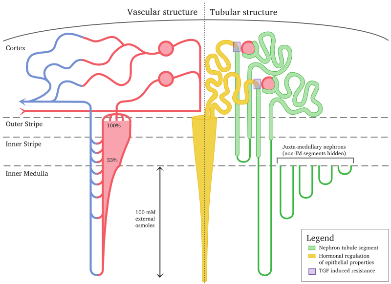
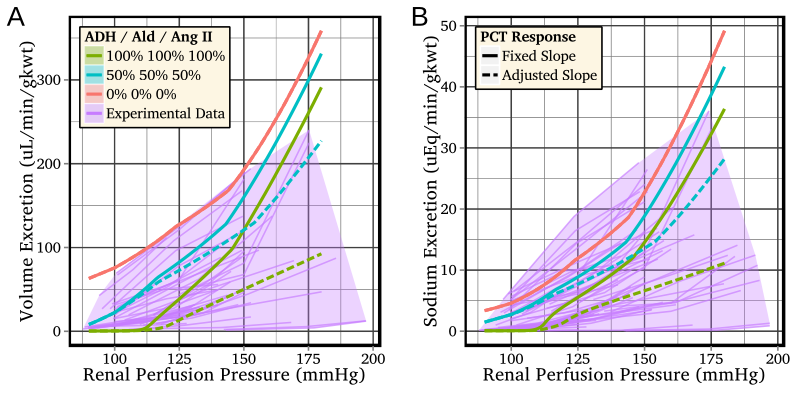

Research Statement
Introduction
My research has focused on the design and analysis of mathematical models of biological systems (from sub-organ to population) to address questions concerning the dynamics of the biological system and how the system’s behaviour can be influenced, whether by regulatory processes or interventions (both direct and indirect).
My main project has been the development of mathematical models of whole-organ function (e.g., water and sodium excretion) as regulated by neurohormonal feedback. See Neurohumoral regulation of renal function.
I have also addressed issues related to the necessary increase in model complexity that arises as a consequence of representing biological systems in greater detail and at multiple spatial and temporal scales. See Design and analysis of multi-organ models.
Finally, I led a project that investigated the implications of logistic constraints in a health-care system on the effectiveness of delivering targeted antiviral interventions for the purpose of controlling an extant influenza epidemic. I continue to possess a strong interest in using mathematical models to inform healthcare decision-making. See Healthcare policies and epidemics.
In addition to these research interests, I have the further goals of making my models universally available (comprising source code, parameter sets, analysis scripts, etc) and of presenting interactive model results online. See Publishing models.
Neurohumoral regulation of renal function
In my PhD I developed network automata models of multi-nephron systems to investigate the effects of perturbations and impaired nephron function on whole-system dynamics (13, 18) and how coupling between nephrons can lead to synchronisations in nephron function (14). This work was conducted with the intention of allowing users to interactively explore the model dynamics (7).
I then moved to Paris to work with S. Randall Thomas as part of the IR4M CNRS laboratory, where I developed a detailed whole-kidney (17) that regulates water and sodium excretion in response to acute variations in arterial pressure and to fluctuations in circulating hormone levels. The model structure is depicted in Figure 1, and a comparison of the model water and sodium excretion rates to a large body of experimental data is shown in Figure 2.
 Figure 1: An overview of the vascular and tubular structure of the model (artificially separated to the left and right, for clarity).
 Figure 2: Hormonal regulation of volume and sodium excretion in the model, compared to acute renal function data obtained from experimental studies of the rat.
I was also fortunate enough to attend the Origins of Renal Physiology course at Mount Desert Island, where I was exposed to many of the experimental aspects of renal physiology and had the opportunity to perform experiments involving classical physiological models under the tutelage of a number of senior investigators.
Since commencing my appointment at Duke University, I have been investigating regulatory mechanisms that modulate the pressure-dependence of sodium excretion (pressure-natriuresis), with a particular focus on medullary blood flow autoregulation and the regulation of sodium trabsport in the proximal convoluted tubule (15).
The overarching goal of this work is to produce a model that:
- Provides a coherent combination of the known physiology and regulatory mechanisms;
- Predicts excretory behaviour that closely matches that observed in in vivo studies; and
- Represents the physiology at a sufficiently fine-grained level such that in vivo alterations in epithelial and regulatory function (whether due to disease, injury or genetic defects) can be explicitly represented as changes in model parameters.
Future applications for this model include:
- Acting as an in silico test-bed for evaluating hypothesis concerning the regulation of renal blood flow, glomerular filtration, and epithelial reabsorption and secretion.
- Predicting renal function in pathophysiological states and the subsequent effects of pharmacological interventions.
- Being embedded inside multi-organ or whole-body models, for the purposes of student education and, more speculatively, for predictive medicine.
The healthcare-related applications of this work are of particular interest due to the ever-increasing burden of chronic kidney-related diseases, such as essential hypertension and diabetes.
There are several fruitful avenues of investigation that can be pursued at this time. The activity of the renal sympathetic nerves (RSNA) is known to affect renal circulation, tubular function and renal hormonal secretion (4, 5); abnormal regulation of this activity has significant whole-body implications (6, 10). RSNA has been incorporated into an existing whole-kidney model (9), but not at the level of physiological detail that we are pursuing.
Other mechanisms that remain to be incorporated into the model include blood flow regulation in the renal medulla (15), about which there are basic physiological questions that remain unanswered and whose ramifications can be more readily investigated in silico than in vivo. For example, it is understood that the medullary blood flow is derived from the blood flow in the efferent arterioles of juxtaglomerular nephrons. However, the blood flow in the vasculature of these nephrons is understood to be strongly autoregulated in response to variations in arterial pressure, while the medullary blood flow is not strongly regulated in diuretic rats. One possible explanation can be proposed on the basis of observations from a functional anatomy study (2), which reported the presence of vascular by-passes in a small fraction of the arterioles, whose diameter may be regulated by hydration status and which may help explain this conundrum.
The renal regulation of acid-base balance is a very important part of whole-body homeostasis; acid-base imbalance is a very severe condition and an incorrect diagnosis of the underlying cause(s) can result in mortality. The addition of this regulatory role to a whole-kidney model would greatly expand its clinical relevance, but is also a highly amibitious goal that would entail several years of research and development. Very few whole-kidney or multi-organ models have attempted to incorporate acid-base regulation, and this has only been implemented in models that represent the physiology at a high level of abstraction, typically treating the body as comprising several fluid compartments.
Design and analysis of multi-organ models
I have also addressed issues related to the increase in model complexity that arises as a consequence of representing biological systems in greater detail and at multiple spatial and temporal scales (7, 8, 12). In particular, in collaboration with a team spanning several labs across France, I played a lead role in both developing a methodology for systematically exploring the ramified implications of multi-parameter interactions in multi-scale physiological models, and undertaking a case study where we applied the methodology to an exhaustive sensitivity analysis of the landmark Guyton model of whole-body circulatory regulation (12) (which itself was instrumental in identifying and exploring the relationship between blood pressure and sodium balance, and in demonstrating the key role of the kidney in long-term regulation of blood pressure).
As the whole-kidney model of renal function increases in detail (see above), it will become necessary to couple it to models of the heart, the renin-angiotensin system, and other organs, in order to predict renal and whole-body function over long periods of time (e.g., for comparison against longitudinal studies of chronic diseases such as hypertension and diabetes). This will necesarily require further advancements in the analysis of multi-organ models and the task of parameter identification.
Healthcare policies and epidemics
In my time at the Melbourne School of Population and Global Health, I led a project to consider the implications of logistic constraints on the effectiveness of antiviral interventions for controlling influenza epidemics (11, 16). This work built on results from previous studies that only admitted idealised responses with unlimited diagnosis, identification and delivery capacities, and accounted for limits in patient presentation, diagnostic detection (both symptomatic and lab-based PCR tests), contact identification and antiviral distribution.
A further element was subsequently incorporated into this model: drug-resistant influenza strains, whose emergence was driven by elevated selection pressure in response to effective antiviral interventions (3). This was achieved by using a discrete-time stochastic process to describe the non-deterministic emergence of drug resistance, in combination with a deterministic, continuous-time population model.
Using the computational framework I developed in this project, a subsequent study investigated the efficacy of the Mongolian healthcare response to the 2009 H1N1 influenza strain (1).
In addition to further investigation of how real-world constraints limit and impede the effectiveness of medical and social interventions for constraining the spread of epidemic diseases, there are many useful applications of such models concerning the control of non-epidemic infectious diseases that continue to strain healthcare systems around the world, from diseases that persist in first-world populations (such as pertussis and human papillomavirus) to diseases that are especially prevalent in third-world countries (such as malaria).
Publishing models
As the complexity of mathematical/computational models grow, it becomes infeasible to completely decribe the model in a publication. In order to allow other researchers to reproduce and verify the results of model simulations, either the model must be described in absolute and precise detail, or the model itself must be made available in some form.
There are currently a number of websites that “curate” models, but the documentation of complex models, whether biological or not, typically consists of one or more publications (which focus on the results more so than the model itself) and, perhaps, the model source code.
There are also a number of markup languages that have been created for the purpose of allowing a single document to both describe the model and to act as an executable form of the model (e.g., SBML and CellML). However, these markup languages impose very specific constraints on the model structure and solving algorithms, and are unable to accommodate models that do not meet these constraints.
In my most recent publication (17) I presented a detailed whole-kidney model, the source code of which we have made available under a very permissive licence (choice of CeCILL or CeCILL-C, compatible with the GNU GPL and LGPL, respectively). In addition, we provide the parameter sets and model solutions for every one of the 1,100 simulations used to generate the results in the manuscript, and the scripts to create each figure in the manuscript.
Furthermore, I have created interactive versions of two key plots from my most recently published paper (Figure 2, above). In the published figures, the reader cannot distinguish between the 60 individual data series that were taken from 14 separate experimental studies. In the interactive plots the reader can select which studies to include and identify each individual data series, in addition to clearly observing how well the model predictions compare to specific data series of interest.
In the future, I aim to further increase the accessibility of my models to the interested reader, by making the model itself publicly available, by providing accompanying documentation and tutorials to guide the reader, and by presenting model results in interactive forms with relevant metadata.
A further goal is to make my models, simulations, results and analysis amenable to interactive investigation not only for other researchers, but also for motivated students (undergraduate or postgraduate) that are interested in modelling. That is, to make the work accessible in an educational context. For example, this style of presentation would be ideal for a seminar series on the general topic of mathematical modelling (and could easily include relatively simple models across a variety of fields, from predator-prey systems to reaction-diffusion patterns to flocking and avoidance).
References
1. Bolton KJ, McCaw JM, Moss R, Morris RS, Wang S, Burma A, Darma B, Narangerel D, Nymadawa P, McVernon J. Likely effectiveness of pharmaceutical and non-pharmaceutical interventions for mitigating influenza virus transmission in Mongolia. Bull World Health Organ 90: 264–271, 2012. http://www.ncbi.nlm.nih.gov/pubmed/22511822.
2. Casellas D, Mimran A. Shunting in renal microvasculature of the rat: a scanning electron microscopic study of corrosion casts. Anat Rec 201: 237–248, 1981.
3. Dafilis MP, Moss R, McVernon J, McCaw JM. Drivers and consequences of influenza antiviral resistant-strain emergence in a capacity-constrained pandemic response. Epidemics 4: 219–226, 2012.
4. DiBona GF, Kopp UC. Neural control of renal function. Physiol Rev 77: 75–197, 1997. http://physrev.physiology.org/content/77/1/75.short.
5. DiBona GF. Nervous kidney: interaction between renal sympathetic nerves and the renin-angiotensin system in the control of renal function. Hypertension 36: 1083–1088, 2000.
6. DiBona GF. Peripheral and central interactions between the renin-angiotensin system and the renal sympathetic nerves in control of renal function. Ann N Y Acad Sci 940: 395–406, 2001.
7. Harris PJ, Buyya R, Chu X, Kobialka T, Kazmierczak E, Moss R, Appelbe W, Hunter PJ, Thomas SR. The Virtual Kidney: an e-Science interface and Grid Portal. Phil Trans R Soc A 467: 2141–2159, 2009.
8. Hernández AI, Rolle VL, Ojeda D, Baconnier P, Fontecave-Jallon J, Guillaud F, Grosse T, Moss R, Hannaert P, Thomas SR. Integration of detailed modules in a core model of body fluid homeostasis and blood pressure regulation. Prog Biophys Mol Biol 107: 169–182, 2011.
9. Karaaslan F, Denizhan Y, Kayserilioglu A, Gulcur HO. Long-term mathematical model involving renal sympathetic nerve activity, arterial pressure, and sodium excretion. Ann Biomed Eng 33: 1607–1630, 2005.
10. Malpas SC. Sympathetic nervous system overactivity and its role in the development of cardiovascular disease. Physiol Rev 90: 513–557, 2010.
11. McCaw JM, Moss R, McVernon J. A decision support tool for evaluating the impact of a diagnostic-capacity and antiviral-delivery constrained intervention strategy on an influenza pandemic. Influenza Other Respi Viruses 5: 212–215, 2011.
12. Moss R, Grosse T, Marchant I, Lassau N, Gueyffier F, Thomas SR. Virtual patients and sensitivity analysis of the Guyton model of blood pressure regulation: towards individualized models of whole-body physiology. PLoS Comput Biol 8: e1002571, 2012.
13. Moss R, Kazmierczak E, Kirley M, Harris P. A computational model for emergent dynamics in the kidney. Phil Trans R Soc A 367: 2125–2140, 2009.
14. Moss R, Kazmierczak E, Kirley M, Harris P. Discrete network models of interacting nephrons. Physica D: Nonlinear Phenomena 238: 2166–2176, 2009.
15. Moss R, Layton AT. Dominant factors that govern pressure natriuresis in diuresis and antidiuresis: a mathematical model. AJP Renal Physiol.
16. Moss R, McCaw JM, McVernon J. Diagnosis and antiviral intervention strategies for mitigating an influenza epidemic. PLoS ONE 6: e14505, 2011.
17. Moss R, Thomas SR. Hormonal regulation of salt and water excretion: a mathematical model of whole-kidney function and pressure-natriuresis. AJP Renal Physiol 306: F224–F248, 2014.
18. Moss R. A Clockwork Kidney: Using hierarchical dynamical networks to model emergent dynamics in the kidney. University of Melbourne. 2009. http://repository.unimelb.edu.au/10187/3529.